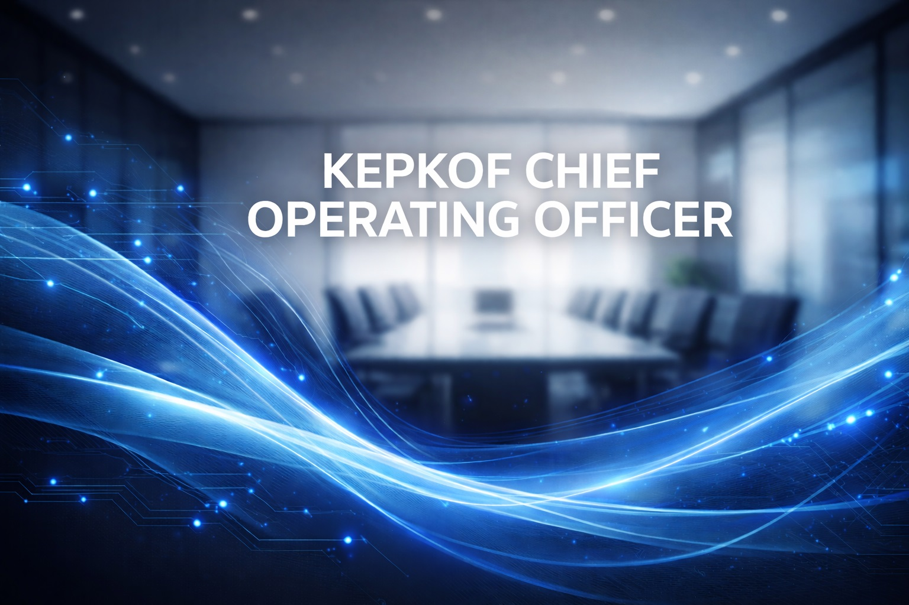

ODHIAMBO SETH
Chief Operating Officer
Orchestrates omni-channel fulfillment, supply chain, and service readiness to keep every promise on time.
Email
seth73602@gmail.com
Phone
+254 702 432 344
Location
Nairobi, Kenya
Experience
9+ years delivering retail operations & fulfillment excellence
Operations Pulse
Commanded dashboards across 5 depots to resolve 24/7 incidents within 2 hours.
Digital Supply Chain
Automated inventory predictions and vendor scorecards to keep availability at 98%.
People
Mentors cross-functional squads on scenario planning and KPI storytelling.
Program Highlight
Launched zero-touch replenishment for 12 partner stores, reducing stockouts 38%.
Service Excellence
Established a 24-hour promise recovery team with a 4.9/5 customer satisfaction score.
Availability
98%
Response Speed
2h
Team Confidence
4.9/5
2024
Introduced supply chain command center with predictive routing, cutting last-mile issues 42%.
+42%
2023
Built automated replenishment that delivered 97% accuracy on visible stock.
+38%